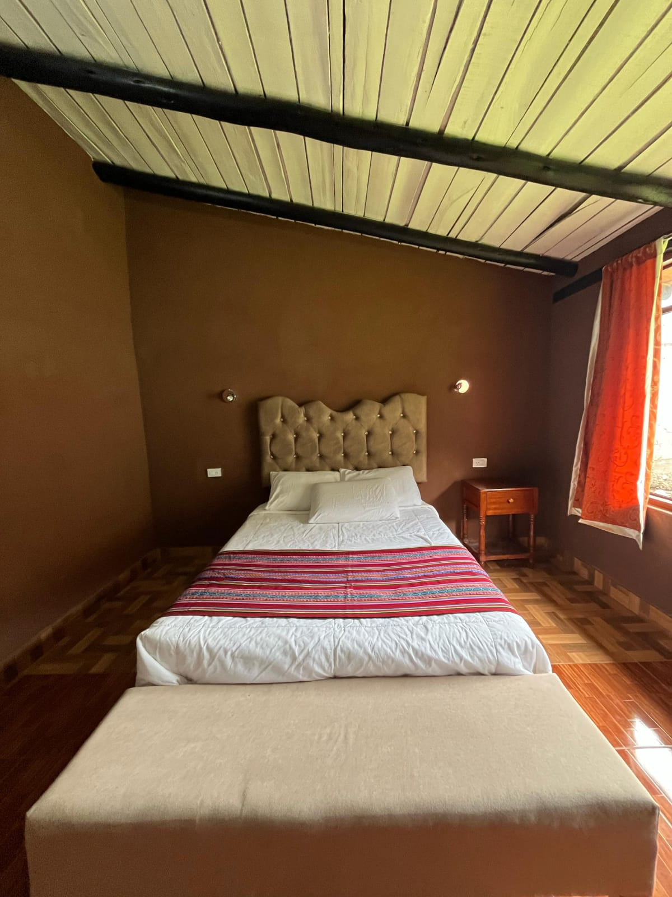

Baño interno
Ducha solar
Cocina y frigobar
Sala para trabajar
Casita matrimonial
S/ 120 por día
Cama matrimonial, cocina equipada, frigobar y un estar para trabajar. El baño está dentro de la casita. WiFi y garage incluidos.
Consultar esta casita